Chapter 8 Reporting data results #2
Download a pdf of the lecture slides covering this topic.
8.1 Matrices and lists
In this section, we’ll talk about the apply family of functions, which allow you to apply a function to all values in a vector, matrix, or list.
First, you need to know about two more object types in R:
matrixlist
8.1.1 Matrices
A matrix is like a data frame, but all the values in all columns must be of the same class (e.g., numeric, character).
R uses matrices a lot for its underlying math (e.g., for the linear algebra operations required for fitting regression models). R can do matrix operations quite quickly.
You can create a matrix with the matrix function. Input a vector with the values to fill the matrix and ncol to set the number of columns:
foo <- matrix(1:10, ncol = 5)
foo## [,1] [,2] [,3] [,4] [,5]
## [1,] 1 3 5 7 9
## [2,] 2 4 6 8 10By default, the matrix will fill up by column. You can fill it by row with the byrow function:
foo <- matrix(1:10, ncol = 5, byrow = TRUE)
foo## [,1] [,2] [,3] [,4] [,5]
## [1,] 1 2 3 4 5
## [2,] 6 7 8 9 10In certain situations, you might want to work with a matrix instead of a data frame (for example, in cases where you were concerned about speed – a matrix is more memory efficient than the corresponding data frame). If you want to convert a data frame to a matrix, you can use the as.matrix function:
foo <- data.frame(col_1 = 1:2, col_2 = 3:4,
col_3 = 5:6, col_4 = 7:8,
col_5 = 9:10)
(foo <- as.matrix(foo))## col_1 col_2 col_3 col_4 col_5
## [1,] 1 3 5 7 9
## [2,] 2 4 6 8 10You can index matrices with square brackets, just like data frames:
foo[1, 1:2]## col_1 col_2
## 1 3You cannot, however, use dplyr functions with matrices:
foo %>% filter(col_1 == 1)Error in UseMethod("filter_") :
no applicable method for 'filter_' applied to
an object of class "c('matrix', 'integer',
'numeric')"All elements in a matrix must have the same class.
The matrix will default to make all values the most general class of any of the values, in any column. For example, if we replaced one numeric value with the character “a”, everything would turn into a character:
foo[1, 1] <- "a"
foo## col_1 col_2 col_3 col_4 col_5
## [1,] "a" "3" "5" "7" "9"
## [2,] "2" "4" "6" "8" "10"8.1.2 Lists
A list has different elements, just like a data frame has different columns. However, the different elements of a list can have different lengths (unlike the columns of a data frame). The different elements can also have different classes.
bar <- list(some_letters = letters[1:3],
some_numbers = 1:5,
some_logical_values = c(TRUE, FALSE))
bar## $some_letters
## [1] "a" "b" "c"
##
## $some_numbers
## [1] 1 2 3 4 5
##
## $some_logical_values
## [1] TRUE FALSETo index an element from a list, use double square brackets. You can use bracket indexing either with numbers (which element in the list?) or with names. You can also index lists with the $ operator.
bar[[1]]## [1] "a" "b" "c"bar[["some_numbers"]]## [1] 1 2 3 4 5bar$some_logical_values## [1] TRUE FALSELists can be used to contain data with an unusual structure and / or lots of different components. For example, the information from fitting a regression is often stored as a list:
my_mod <- glm(rnorm(10) ~ c(1:10))
is.list(my_mod)## [1] TRUEhead(names(my_mod), 3)## [1] "coefficients" "residuals" "fitted.values"my_mod[["coefficients"]]## (Intercept) c(1:10)
## 0.18311575 -0.045861798.2 apply functions
There is a whole family of apply functions, as part of base R. These include:
apply: Apply a function over all the rows (MARGIN = 1) or columns (MARGIN = 2) of a matrixlapply: Apply a function over elements of a list.sapply: Likelapply, but returns a vector instead of a list.
Here is the syntax for apply:
## Generic code
apply([matrix], MARGIN = [margin (1: rows, 2: columns)],
FUN = [function])I’ll use the worldcup data as an example:
ex <- worldcup[ , c("Shots", "Passes", "Tackles", "Saves")]
head(ex)## Shots Passes Tackles Saves
## Abdoun 0 6 0 0
## Abe 0 101 14 0
## Abidal 0 91 6 0
## Abou Diaby 1 111 5 0
## Aboubakar 2 16 0 0
## Abreu 0 15 0 0Take the mean of all columns:
apply(ex, MARGIN = 2, mean)## Shots Passes Tackles Saves
## 2.3042017 84.5210084 4.1915966 0.6672269Take the sum of all rows:
head(apply(ex, MARGIN = 1, sum), 4)## Abdoun Abe Abidal Abou Diaby
## 6 115 97 117You can use your own function with any of the apply functions. For example, if you wanted to calculate a value for each player that is a weighted mean of some of their statistics, you could run:
weighted_mean <- function(soccer_stats,
weights = c(0.40, 0.01,
0.25, 1.5)){
out <- sum(weights * soccer_stats)
return(out)
}
head(apply(ex, MARGIN = 1, weighted_mean), 4)## Abdoun Abe Abidal Abou Diaby
## 0.06 4.51 2.41 2.76The lapply() function will apply a function across a list. The different elements of the list do not have to be the same length (unlike a data frame, where the columns all have to have the same length).
(ex <- list(a = c(1:5), b = rnorm(3), c = letters[1:4]))## $a
## [1] 1 2 3 4 5
##
## $b
## [1] 2.3491627 -0.8387520 -0.5441897
##
## $c
## [1] "a" "b" "c" "d"This call will calculate the mean of each function:
lapply(ex, FUN = mean)## $a
## [1] 3
##
## $b
## [1] 0.3220737
##
## $c
## [1] NAYou can include arguments for the function that you specify with FUN, and they’ll be passed to that function. For example, to get the first value of each element, you can run:
lapply(ex, FUN = head, n = 1)## $a
## [1] 1
##
## $b
## [1] 2.349163
##
## $c
## [1] "a"The sapply() function also applies a function over a list, but it returns a vector rather than a list:
sapply(ex, FUN = head, n = 1)## a b c
## "1" "2.34916270287454" "a"In practice, I do use apply() some, but I can often find a way to do similar things to other apply family functions using the tools in dplyr.
You should know that apply family functions take advantage of the matrix structure in R. This can be one of the fastest ways to run code in R. It is usually a lot faster than doing the same things with loops. However, unless you are working with large data sets, you may not notice a difference, and “tidyverse” functions are usually comparable in speed.
I would recommend using whichever method makes the most sense to you until you run into an analysis that takes a noticeable amount of time to run, and then you might want to work a bit more to optimize your code.
8.3 Point maps
It is very easy now to create point maps in R based on longitude and latitude values of specific locations. You can use the map_data function from the ggplot2 package to pull data for maps at different levels (“usa”, “state”, “world”, “county”).
The maps you pull using map_data are just data to use to plot polygon shapes for areas like states and counties.
library(ggplot2)
us_map <- map_data("state")
head(us_map, 3)## long lat group order region subregion
## 1 -87.46201 30.38968 1 1 alabama <NA>
## 2 -87.48493 30.37249 1 2 alabama <NA>
## 3 -87.52503 30.37249 1 3 alabama <NA>You can add points to these based on latitude and longitude.
Mapping uses the long and lat columns from this data for location:
north_carolina <- us_map %>%
filter(region == "north carolina")
ggplot(north_carolina, aes(x = long, y = lat)) +
geom_point()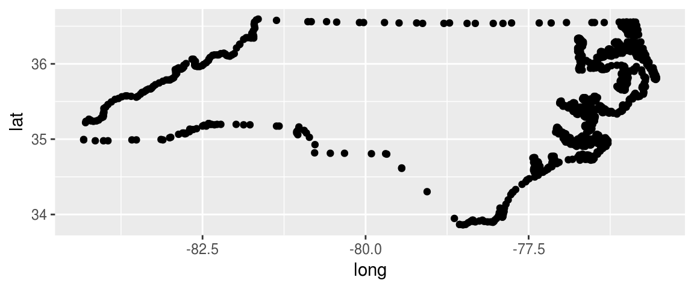
If you try to plot lines, however, you’ll have a problem:
carolinas <- us_map %>%
filter(str_detect(region, "carolina"))
ggplot(carolinas, aes(x = long, y = lat)) +
geom_path()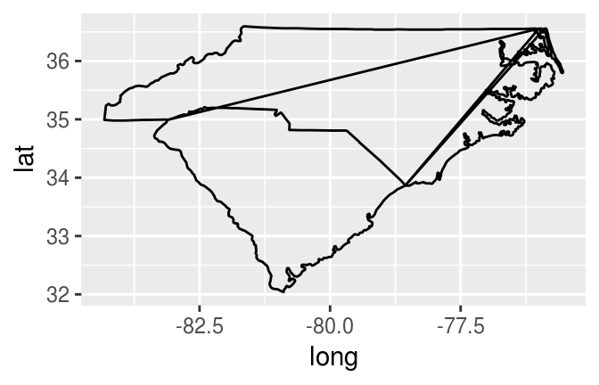
The group column fixes this problem. It will plot a separate path or polygon for each separate group. For mapping, this gives separate groupings for mainland versus islands and for different states:
carolinas %>%
group_by(group) %>%
slice(1)## Source: local data frame [4 x 6]
## Groups: group [4]
##
## long lat group order region subregion
## <dbl> <dbl> <dbl> <int> <chr> <chr>
## 1 -75.89399 36.55471 38 9549 north carolina knotts
## 2 -78.55824 33.86753 39 9587 north carolina main
## 3 -76.00285 36.55471 40 10321 north carolina spit
## 4 -83.10753 34.99053 47 11441 south carolina <NA>Using group = group avoids the extra lines from the earlier map:
ggplot(carolinas, aes(x = long, y = lat,
group = group)) +
geom_path()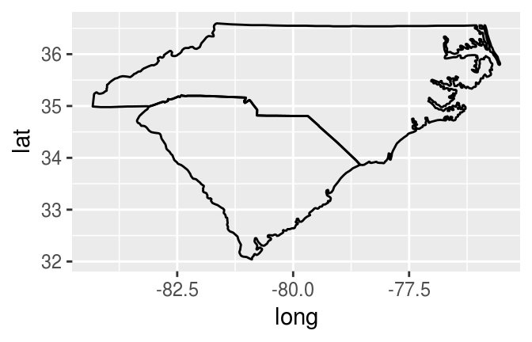
To plot filled regions, use geom_polygon with fill = region. Also, the “void” theme is often useful when mapping:
ggplot(carolinas, aes(x = long, y = lat,
group = group,
fill = region)) +
geom_polygon(color = "black") +
theme_void()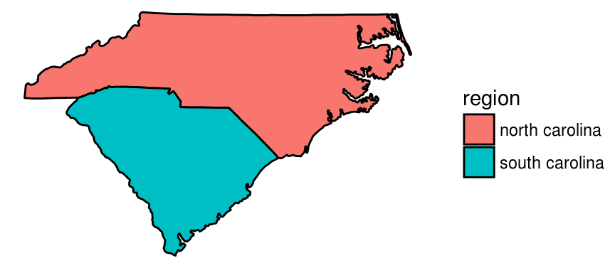
Here is an example of plotting all of the US by state:
map_1 <- ggplot(us_map, aes(x = long, y = lat,
group = group)) +
geom_polygon(fill = "dodgerblue",
color = "white") +
theme_void()map_1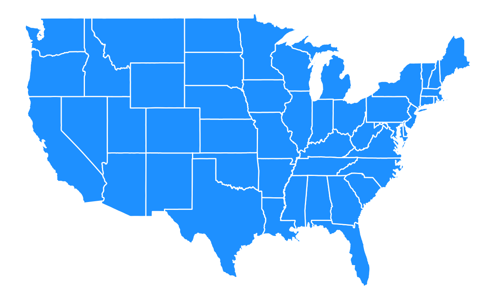
To add points to these maps, you can use geom_point, again using longitude and latitude to define position.
Here I’ll use an example of data points related to the story told in last year’s “Serial” podcast.
serial <- read.csv("data/serial_map_data.csv")
head(serial, 3)## x y Type Name Description
## 1 356 437 cell-site L688
## 2 740 360 cell-site L698
## 3 910 340 cell-site L654David Robinson figured out a way to convert the x and y coordinates in this data to latitude and longitude coordinates. I’m also adding a column for whether of not the point is a cell tower.
serial <- serial %>%
mutate(long = -76.8854 + 0.00017022 * x,
lat = 39.23822 + 1.371014e-04 * y,
tower = Type == "cell-site")serial[c(1:2, (nrow(serial) - 1):nrow(serial)),
c("Type", "Name", "long", "lat", "tower")]## Type Name long lat tower
## 1 cell-site L688 -76.82480 39.29813 TRUE
## 2 cell-site L698 -76.75944 39.28758 TRUE
## 24 base-location Adnan's house -76.76284 39.30622 FALSE
## 25 base-location Jenn's house -76.72301 39.29443 FALSENow I can map just Baltimore City and Baltimore County in Maryland and add these points. I used map_data to pull the “county” map and specified “region” as “maryland”, to limit the map just to Maryland counties.
baltimore <- map_data('county', region = 'maryland')
head(baltimore, 3)## long lat group order region subregion
## 1 -78.64992 39.53982 1 1 maryland allegany
## 2 -78.70148 39.55128 1 2 maryland allegany
## 3 -78.74159 39.57420 1 3 maryland alleganyFrom that, I subset out rows where the subregion column was “baltimore city” or “baltimore”.
baltimore <- subset(baltimore,
subregion %in% c("baltimore city",
"baltimore"))
head(baltimore, 3)## long lat group order region subregion
## 114 -76.88521 39.35074 3 114 maryland baltimore
## 115 -76.89094 39.37939 3 115 maryland baltimore
## 116 -76.88521 39.40804 3 116 maryland baltimoreI used geom_point to plot the points. ggplot uses the group column to group together counties, but we don’t need that in the points, so I needed to set group = NA in the geom_point statement. I put color = tower inside the aes statement so that the points would be one color for cell towers and another color for everything else.
balt_plot <- ggplot(baltimore,
aes(x = long, y = lat, group = group)) +
geom_polygon(fill = "lightblue", color = "black") +
geom_point(data = serial, aes(x = long, y = lat,
group = NA,
color = tower)) +
theme_bw()balt_plot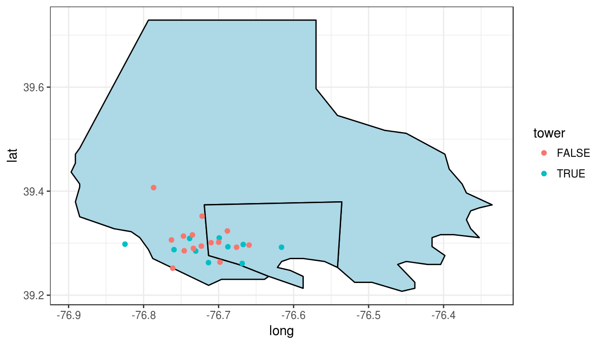
8.4 Choropleth maps
There’s a fantastic new(-ish) package in R to plot choropleth maps. You could also plot choropleths using ggplot and other mapping functions, but I would strongly recommend this new package if you’re mapping the US.
You will need to install and load the choroplethr package in R to use the functions below.
# install.packages("choroplethr")
library(choroplethr)
# install.packages("choroplethrMaps")
library(choroplethrMaps)At the most basic level, you can use this package to plot some data that comes automatically with the package (you’ll just need to load the data using the data function). For example, if you wanted to plot state-by-state populations as of 2012, you could use:
data(df_pop_state)
map_3 <- state_choropleth(df_pop_state)map_3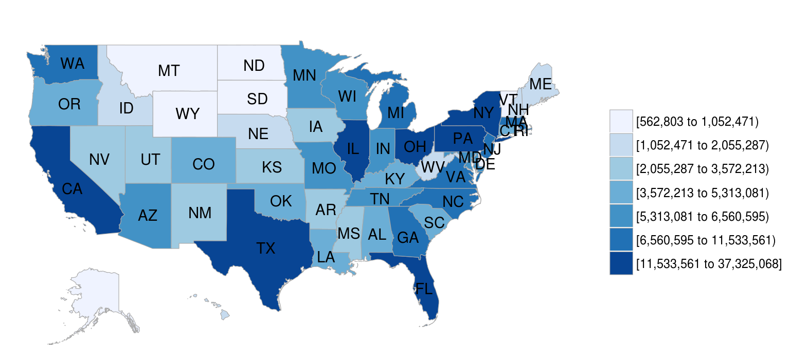
You can find out more about the df_pop_state data if you type ?df_pop_state. Notice that, for the data frame, the location is given in a column called region and the population size to plot is in a column called value.
head(df_pop_state, 3)## region value
## 1 alabama 4777326
## 2 alaska 711139
## 3 arizona 6410979You could use this function to create any state-level choropleth you wanted, as long as you could create a data frame with a column for states called region and a column with the value you want to show called value.
You can run similar functions at different spatial resolutions (for example, county or zip code):
data(df_pop_county)
head(df_pop_county, 3)## region value
## 1 1001 54590
## 2 1003 183226
## 3 1005 27469You can plot choropleths at this level, as well:
map_4 <- county_choropleth(df_pop_county)map_4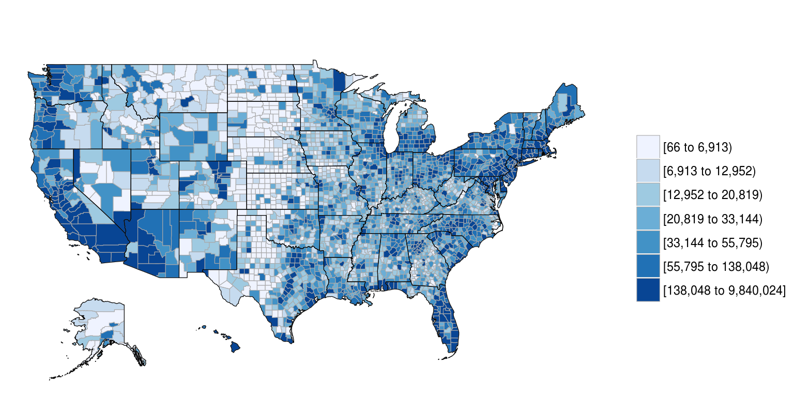
You can even do this for countries of the world:
data(df_pop_country)
country_choropleth(df_pop_country)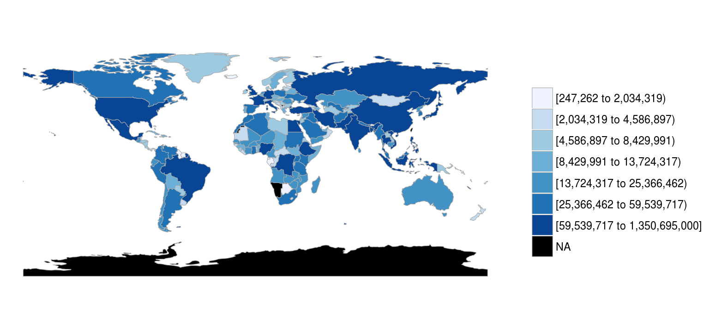
You can zoom into states or counties. For example, to plot population by county in Colorado, you could run:
county_choropleth(df_pop_county, state_zoom = "colorado")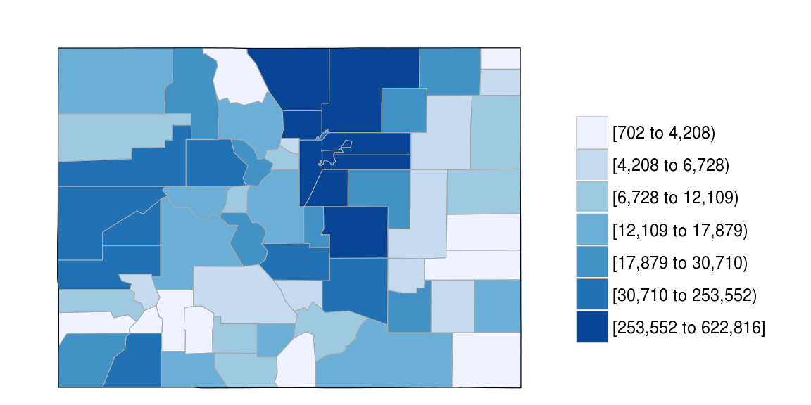
You can also use this package to map different tables from the US Census’ American Community Survey.
The package includes the choroplethr_acs() function to do this, with an option for which level of map you want (map =, choices are “state”, “country”, and “zip”). If you want to map at the state level, for example, use state_choroplethr_acs() (other options are county level and zip code level).
These functions pull recent Census data directly from the US Census using its API, so they require you to get an API key, which you can get here.
Once you put in your request, they’ll email you your key. Once they give you your API key, you’ll need to install it on R:
library(acs)
api.key.install('[your census api key]');You can pick from a large number of American Community Survey tables– see here for the list plus ID numbers. If the table has multiple columns, you will be prompted to select which one you want to plot.
For example, table B19301 gives per-capita income, so if you wanted to plot that, you could run:
county_choropleth_acs(tableId = "B19301",
state_zoom = c("wyoming",
"colorado"))8.5 Google Maps API
The ggmap package allows you to use tools from Google Maps directly from R.
## install.packages("ggmap")
library(ggmap)This package uses the Google Maps API, so you should read their terms of service and make sure you follow them. In particular, you are limited to just a certain number of queries per time.
You can use the get_map function to get maps for different locations. You can either use the longitude and latitude of the center point of the map, along with the zoom option to say how much to zoom in (3: continent to 20: building) or you can use a character string to specify a location.
If you do the second, get_map will actually use the Google Maps API to geocode the string to a latitude and longitude and then get the map (you can imagine that this is like searching in Google Maps in the search box for a location).
beijing <- get_map("Beijing", zoom = 12)
ggmap(beijing)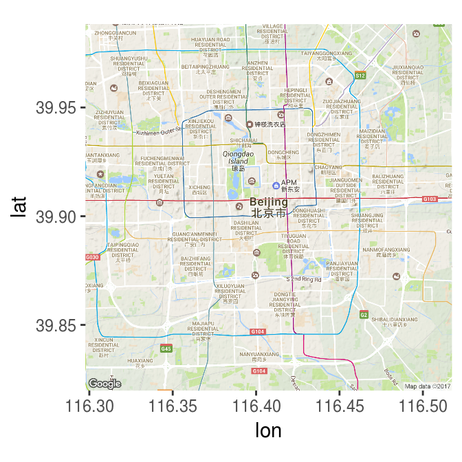
With this package, you can get maps from the following different sources:
- Google Maps
- OpenStreetMap
- Stamen Maps
- CloudMade Maps (You may need a separate API key for this)
Here are different examples of Beijing using different map sources. (Also, note that I’m using the option extent = "device" to fill up the whole plot are with the map, instead of including axis labels and titles.)
beijing_a <- get_map("Beijing", zoom = 12,
source = "stamen", maptype = "toner")
a <- ggmap(beijing_a, extent = "device")
beijing_b <- get_map("Beijing", zoom = 12,
source = "stamen", maptype = "watercolor")
b <- ggmap(beijing_b, extent = "device")
beijing_c <- get_map("Beijing", zoom = 12,
source = "google", maptype = "hybrid")
c <- ggmap(beijing_c, extent = "device")grid.arrange(a, b, c, nrow = 1) 
As with the maps from ggplot2, you can add points to these maps:
serial_phone <- read.csv("data/serial_phone_data.csv") %>%
mutate(Cell_Site = substring(Cell_Site, 1, 4),
Call_Time = as.POSIXct(Call_Time, format = "%d/%m/%y %H:%M",
tz = "EST")) %>%
left_join(serial, by = c("Cell_Site" = "Name")) %>%
select(Person_Called, Call_Time, Duration, long, lat) %>%
filter(!(Person_Called %in% c("incoming", "# + Adnan cell"))) %>%
arrange(Call_Time)serial_map <- get_map(c(-76.7, 39.3), zoom = 12,
source = "stamen",
maptype = "toner")
serial_map <- ggmap(serial_map, extent = "device") +
geom_point(data = serial_phone,
aes(x = long, y = lat),
color = "red", size = 3,
alpha = 0.4) +
geom_point(data = subset(serial,
Type != "cell-site"),
aes(x = long, y = lat),
color = "darkgoldenrod1",
size = 2)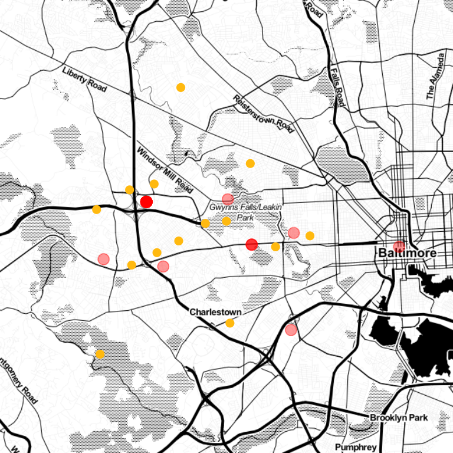
You can also use the Google Maps API, through the geocode function, to get the latitude and longitude of specific locations. Basically, if the string would give you the right location if you typed it in Google Maps, geocode should be able to geocode it.
For example, you can get the location of CSU:
geocode("Colorado State University")## lon lat
## 1 NA NAYou can also get a location by address:
geocode("1 First St NE, Washington, DC")## lon lat
## 1 -77.00465 38.89051You can get distances, too, using the mapdist function with two locations. This will give you distance and also time.
mapdist("Fort Collins CO",
"1 First St NE, Washington, DC") %>%
select(from, miles, hours)## from miles hours
## 1 Fort Collins CO 1670.754 24.623898.6 String operations
The str_trim function from the stringr package allows you to trim leading and trailing white space:
with_spaces <- c(" a ", " bob", " gamma")
with_spaces## [1] " a " " bob" " gamma"str_trim(with_spaces)## [1] "a" "bob" "gamma"This is rarer, but if you ever want to, you can add leading and/or trailing white space to elements of a character vector with str_pad from the stringr package.
There are also functions to change a full character string to uppercase, lowercase, or title case:
titanic_train$Name[1]## [1] "Braund, Mr. Owen Harris"str_to_upper(titanic_train$Name[1])## [1] "BRAUND, MR. OWEN HARRIS"str_to_lower(titanic_train$Name[1])## [1] "braund, mr. owen harris"str_to_title(str_to_lower(titanic_train$Name[1]))## [1] "Braund, Mr. Owen Harris"8.7 In-course exercise
This exercise will continue using the Fatality Analysis Reporting System (FARS) data we started using last week.
8.7.1 Writing a function to create state-specific plots
- Adapt the code that you wrote for to create a loop in last week’s in-course exercise and write a function that will create a state-specific plot when you call it. This function should have inputs of
datafrandwhich_state, wheredatafris the data frame with the full data set (accidentin this case) andwhich_stateis the name of the state for which you’d like to create the plot. Name your functionsmake_state_plot. Here are a few examples of running this function:
make_state_plot(accident, which_state = "California")
make_state_plot(accident, which_state = "North Carolina")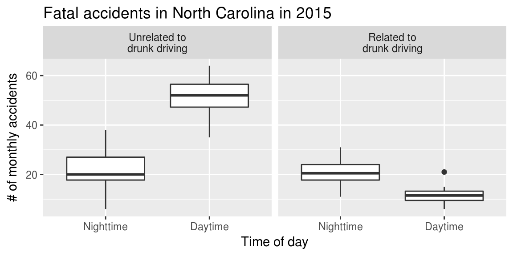
make_state_plot(accident, which_state = "Illinois")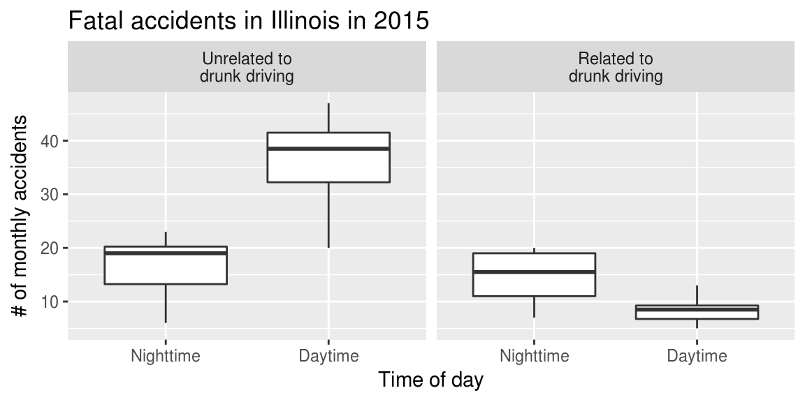
- In general, there is a pattern of more fatal accidents during the daytime being unrelated to drunk driving versus related. The pattern is reversed for nighttime accidents. Use your function to see if you can find any states that don’t follow this pattern.
- So far, we have not covered error checking in functions. In the function that you just wrote, we are assuming that the user will never give inputs that would cause errors. Look through the code for your function and see what assumptions we’re making about what values a user would input for
datafrandwhich_state. What could go wrong if a user does not comply with these assumptions? - The best practice when writing functions, especially for others to use, is to use the package::function syntax to identify which package each function comes from. For example, if you’re using
mutatein a function, you should write the function code asdplyr::mutate. Go back through the code for the function you wrote. Every time it uses a function that is not part of base R, change the code to use this package::function syntax. - If you have time: Can you combine your function, a loop (or
lapply), and regular expressions to create plots for all states that start with “C”? That have “North” in their names? (Hint: One way to get a list of states is from theaccidentdata frame. Once you’ve joined in state names as a column calledstate_name, you can use:unique(accident$state_name).)
8.7.1.1 Example R code
Here is some example R code for writing the function to create state-specific plots:
make_state_plot <- function(datafr, which_state){
a <- datafr %>%
dplyr::filter(state_name == which_state) %>%
dplyr::mutate(drunk_dr = factor(drunk_dr,
labels = c("Unrelated to\ndrunk driving",
"Related to\ndrunk driving")),
daytime = factor(daytime, labels = c("Nighttime", "Daytime"))) %>%
dplyr::group_by(daytime, month, drunk_dr) %>%
dplyr::summarize_(accidents = ~ n()) %>%
ggplot2::ggplot(ggplot2::aes(x = daytime, y = accidents,
group = daytime)) +
ggplot2::geom_boxplot() +
ggplot2::facet_wrap(~ drunk_dr, ncol = 2) +
ggplot2::xlab("Time of day") + ggplot2::ylab("# of monthly accidents") +
ggplot2::ggtitle(paste("Fatal accidents in", which_state, "in 2015"))
return(a)
}
# With package::function notation
make_state_plot <- function(datafr, which_state){
a <- datafr %>%
dplyr::filter(state_name == which_state) %>%
dplyr::mutate(drunk_dr = factor(drunk_dr,
labels = c("Unrelated to\ndrunk driving",
"Related to\ndrunk driving")),
daytime = factor(daytime, labels = c("Nighttime", "Daytime"))) %>%
dplyr::group_by(daytime, month, drunk_dr) %>%
dplyr::summarize_(accidents = ~ n()) %>%
ggplot2::ggplot(ggplot2::aes(x = daytime, y = accidents,
group = daytime)) +
ggplot2::geom_boxplot() +
ggplot2::facet_wrap(~ drunk_dr, ncol = 2) +
ggplot2::xlab("Time of day") + ggplot2::ylab("# of monthly accidents") +
ggplot2::ggtitle(paste("Fatal accidents in", which_state, "in 2015"))
return(a)
}Example of using this function to create plots for all states that start with “C”:
states <- unique(accident$state_name)
c_states <- states[str_detect(states, "^C")]
for(state in c_states){
state_plot <- make_state_plot(datafr = accident,
which_state = state)
print(state_plot)
}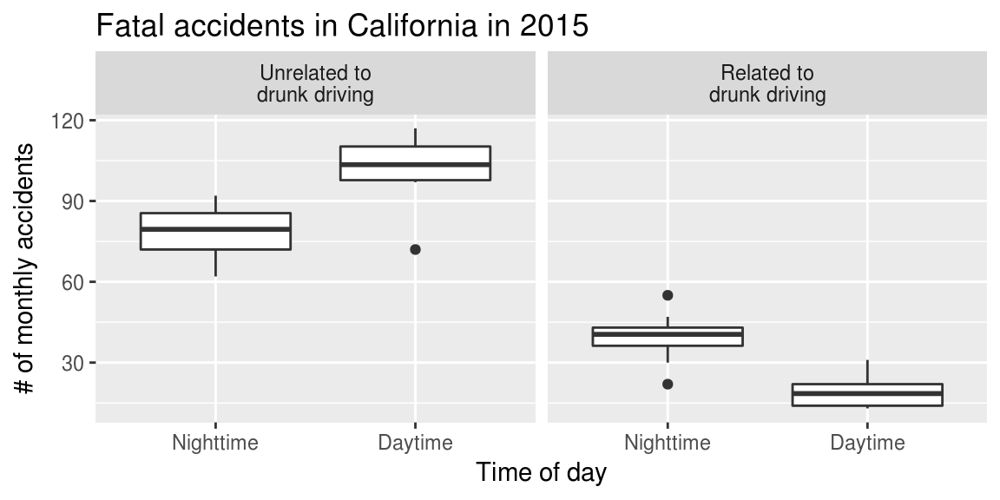 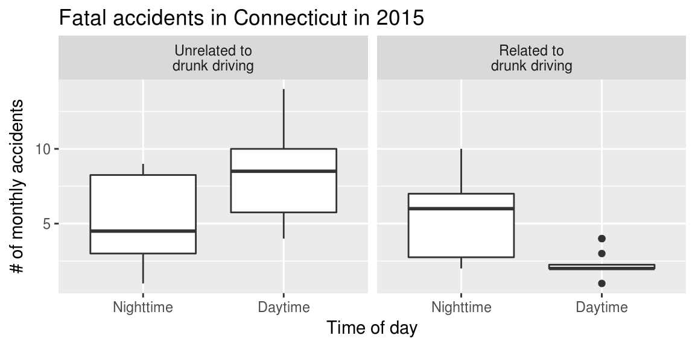
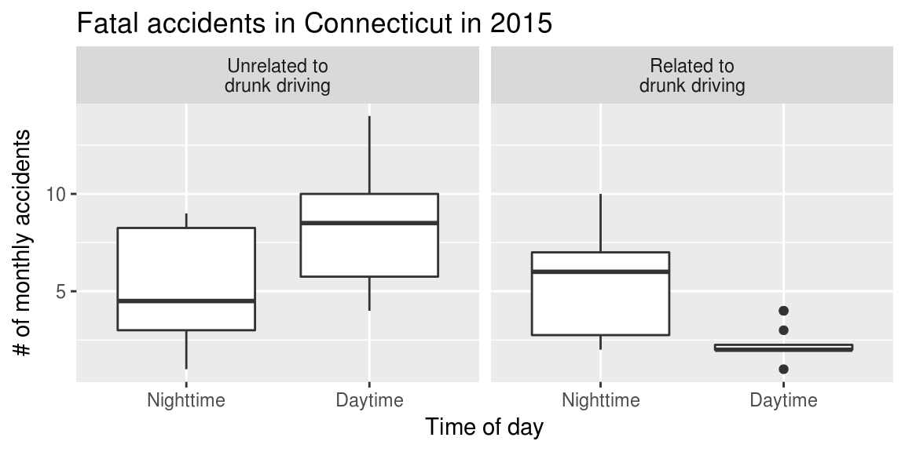
To use lapply, the state name needs to be the first argument in the function. We could re-write the function to comply and then use lapply:
make_state_plot <- function(which_state, datafr){
a <- datafr %>%
dplyr::filter(state_name == which_state) %>%
dplyr::mutate(drunk_dr = factor(drunk_dr,
labels = c("Unrelated to\ndrunk driving",
"Related to\ndrunk driving")),
daytime = factor(daytime, labels = c("Nighttime", "Daytime"))) %>%
dplyr::group_by(daytime, month, drunk_dr) %>%
dplyr::summarize_(accidents = ~ n()) %>%
ggplot2::ggplot(ggplot2::aes(x = daytime, y = accidents,
group = daytime)) +
ggplot2::geom_boxplot() +
ggplot2::facet_wrap(~ drunk_dr, ncol = 2) +
ggplot2::xlab("Time of day") + ggplot2::ylab("# of monthly accidents") +
ggplot2::ggtitle(paste("Fatal accidents in", which_state, "in 2015"))
return(a)
}
north_states <- states[str_detect(states, "North")]
lapply(north_states, make_state_plot, datafr = accident) 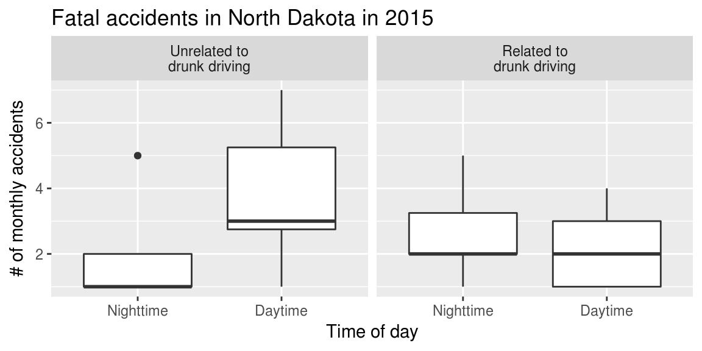
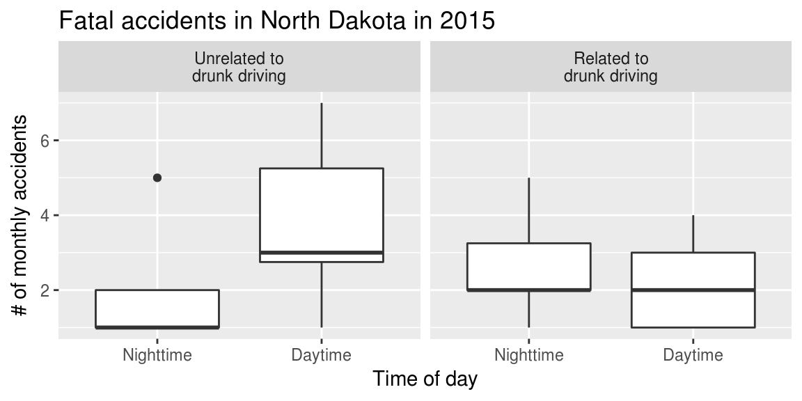
8.7.2 First steps in mapping
If you have time, you can try some exercises with mapping.
- Read in and clean up the FARS data and save it to an R object called
accident. Theaccidentdata frame should include location (longitude and latitude), state, and whether the accident involved drunk driving. Once you’re done cleaning, the dataset should look like this:
state_fips <- read_delim("http://www2.census.gov/geo/docs/reference/state.txt",
delim = "|") %>%
dplyr::rename(state = STATE,
state_name = STATE_NAME) %>%
dplyr::select(state, state_name) %>%
dplyr::mutate(state = as.integer(state))
accident <- read_csv("data/accident.csv") %>%
dplyr::select(STATE, LATITUDE, LONGITUD, DRUNK_DR) %>%
dplyr::rename(state = STATE,
lat = LATITUDE,
long = LONGITUD,
drunk_dr = DRUNK_DR) %>%
dplyr::mutate(drunk_dr = drunk_dr > 0) %>%
dplyr::left_join(state_fips, by = "state") %>%
dplyr::select(-state)
accident %>% slice(1:5)## # A tibble: 5 × 4
## lat long drunk_dr state_name
## <dbl> <dbl> <lgl> <chr>
## 1 33.87865 -87.32533 TRUE Alabama
## 2 34.91044 -86.90871 FALSE Alabama
## 3 32.14201 -85.75846 TRUE Alabama
## 4 31.43981 -85.51030 TRUE Alabama
## 5 31.31933 -85.51510 FALSE Alabama- Next, create another R object with state-specific summaries. This object should be a data frame called
state_summariesthat gives the total number of fatal accidents in each state and the percent of all fatal accidents related to drunk driving in each state. Thestate_summariesdata frame should look like this when you are done cleaning:
state_summaries <- accident %>%
dplyr::group_by(state_name) %>%
dplyr::summarize_(n = ~ n(),
perc_drunk_dr = ~ 100 * mean(drunk_dr)) # Because `drunk_dr` is
# 0 / 1, the mean is the percent of
# values where `drunk_dr` == 1.
state_summaries %>% slice(1:5)## # A tibble: 5 × 3
## state_name n perc_drunk_dr
## <chr> <int> <dbl>
## 1 Alabama 783 27.45849
## 2 Alaska 60 40.00000
## 3 Arizona 810 28.76543
## 4 Arkansas 472 25.84746
## 5 California 2925 24.54701- Create the following state-level choropleths of number of fatal accidents in 2015 in each state and of the percent of fatal accidents linked to drunk driving in each state. The quickest way to do this is with the
choroplethrpackage.
# With `choroplethr` package
library(choroplethr)
state_summaries %>%
dplyr::mutate(state_name = str_to_lower(state_name)) %>%
dplyr::rename(region = state_name,
value = n) %>%
state_choropleth(title = "Fatal accidents by state, 2015",
legend = "# of fatal accidents")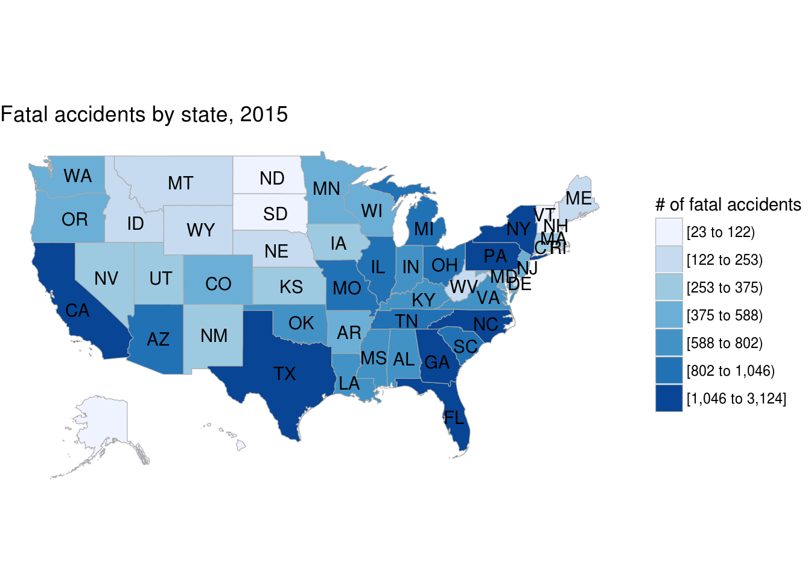
state_summaries %>%
dplyr::mutate(state_name = str_to_lower(state_name)) %>%
dplyr::rename(region = state_name,
value = perc_drunk_dr) %>%
state_choropleth(title = "Percent of fatal accidents linked\nto drunk driving, 2015",
legend = "% of fatal accidents\nlinked to drunk driving")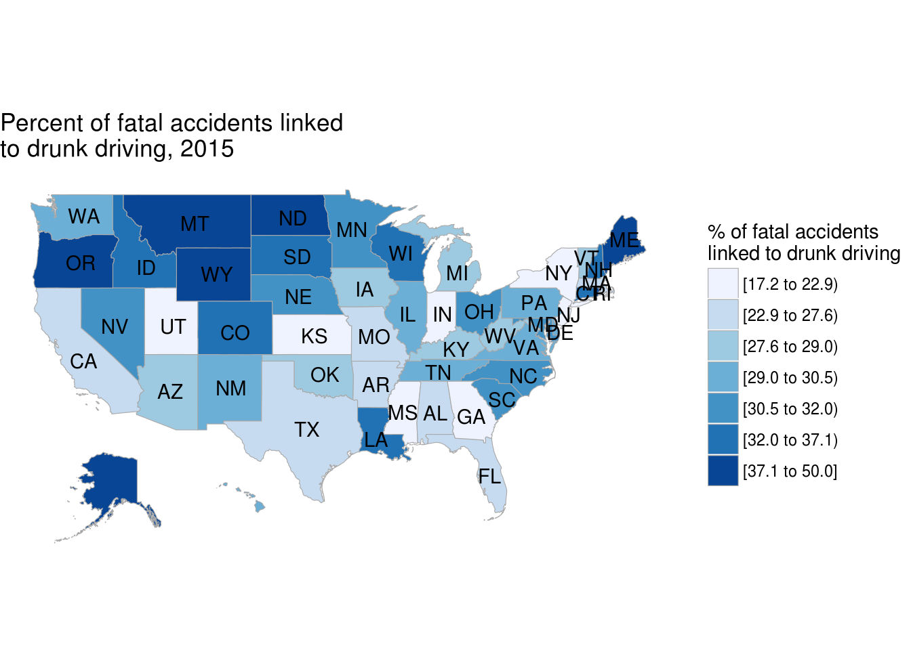
- Now, you will be using the latitude and longitude of each accident to plot accident locations within a state. Check if the columns for latitude and longitude need more cleaning (spoiler alert— they do). Filter out any values that could not reasonably be within the 50 U.S. states and D.C.
# It turns out that values like 77.7777, 88.8888, and 99.9999 are used as
# missing values of latitude (similar for 777.777, etc., for longitude)
accident <- accident %>%
dplyr::filter(lat < 75 & long < 777)- Map the locations of fatal accidents in Texas in 2015 on top of a Google Map base map that shows major roads. An example map is shown below. (Hint: Use the
get_mapandggmapfunctions for this part.)
texas <- get_map(location = "texas", zoom = 6, maptype = "roadmap")
ggmap(texas, extent = "device") +
geom_point(data = dplyr::filter(accident, state_name == "Texas"),
aes(x = long, y = lat), alpha = 0.2, size = 0.5,
color = "red")
- Create a function that will take three inputs:
datafr, a data frame likeaccidentwith fatal accident data;which_state, a state name; anddrunk_dr, a logical value (TRUE / FALSE) specifying whether to create separate maps for accidents that were and were not linked to drunk driving. This function should output a map (or two maps ifdrunk_dris set to TRUE) with points for all fatal accidents in the state. Usemap_dataand create the map yourself, rather than usingchoroplethrfor this question. Examples of calling this function are shown below the function definition.
map_fatal_accidents <- function(datafr = accident, which_state,
drunk_dr = FALSE){
state_accidents <- datafr %>%
dplyr::filter(state_name == which_state)
state_map_data <- ggplot2::map_data("county", region = which_state)
accident_map <- ggplot2::ggplot(state_map_data,
ggplot2::aes(x = long, y = lat,
group = subregion)) +
ggplot2::geom_polygon(color = "gray", fill = NA) +
ggplot2::theme_void() +
ggplot2::geom_point(data = state_accidents,
ggplot2::aes(x = long, y = lat, group = NULL),
alpha = 0.5, size = 0.7 )
if(drunk_dr){
accident_map <- accident_map +
ggplot2::facet_wrap(~ drunk_dr, ncol = 2)
}
return(accident_map)
}map_fatal_accidents(accident, which_state = "Colorado")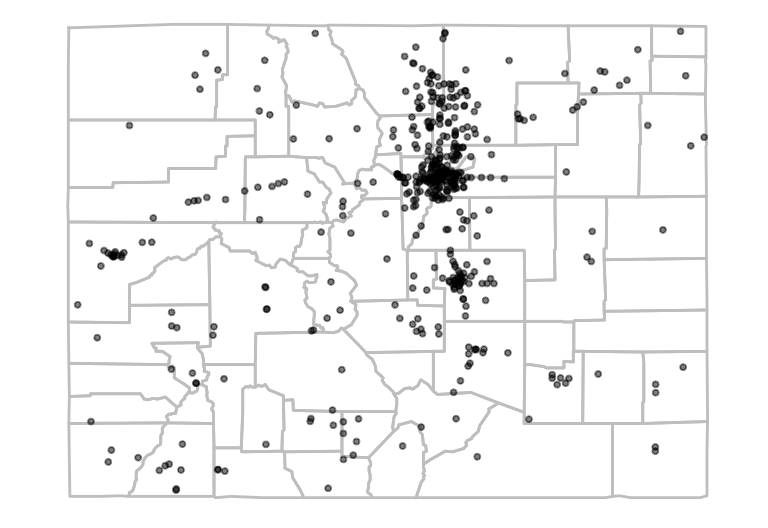
map_fatal_accidents(accident, which_state = "Texas")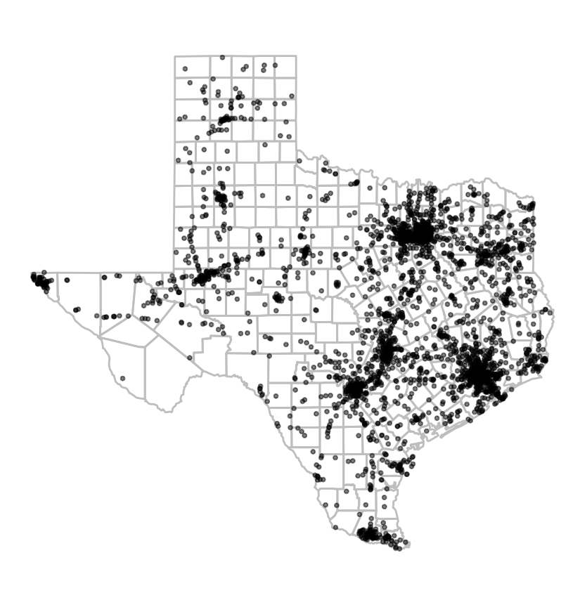
map_fatal_accidents(accident, which_state = "Colorado",
drunk_dr = TRUE)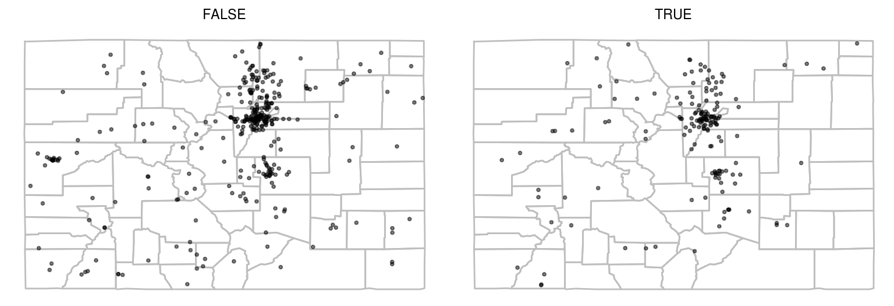
map_fatal_accidents(accident, which_state = "Texas",
drunk_dr = TRUE)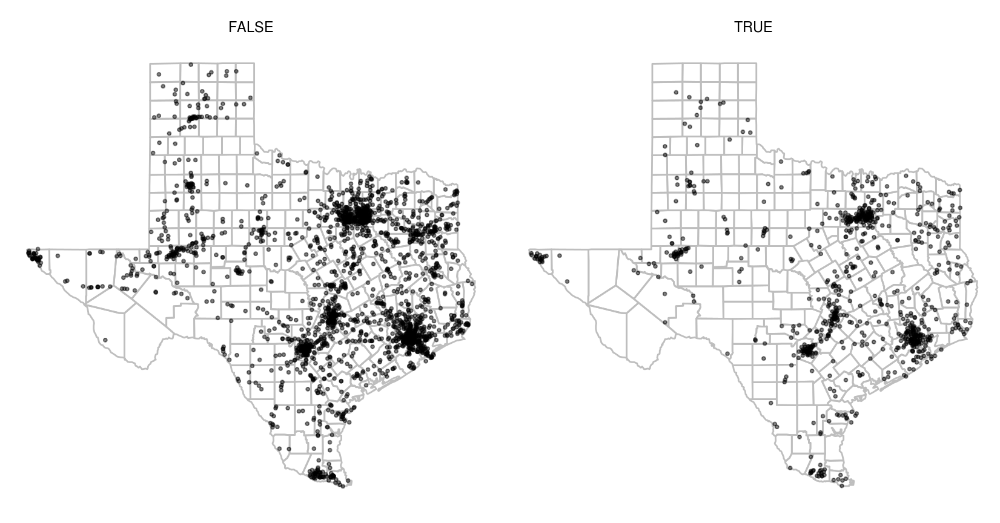